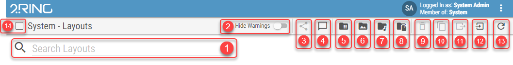
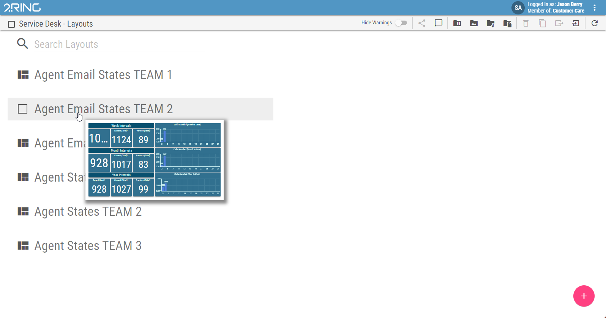
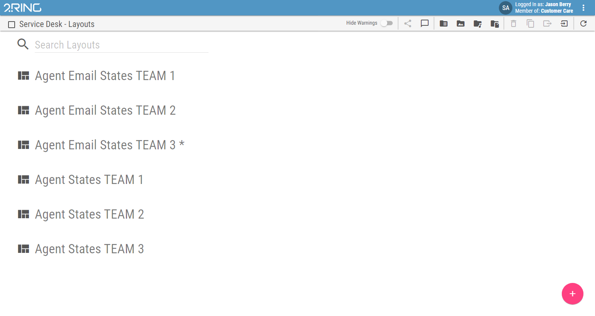
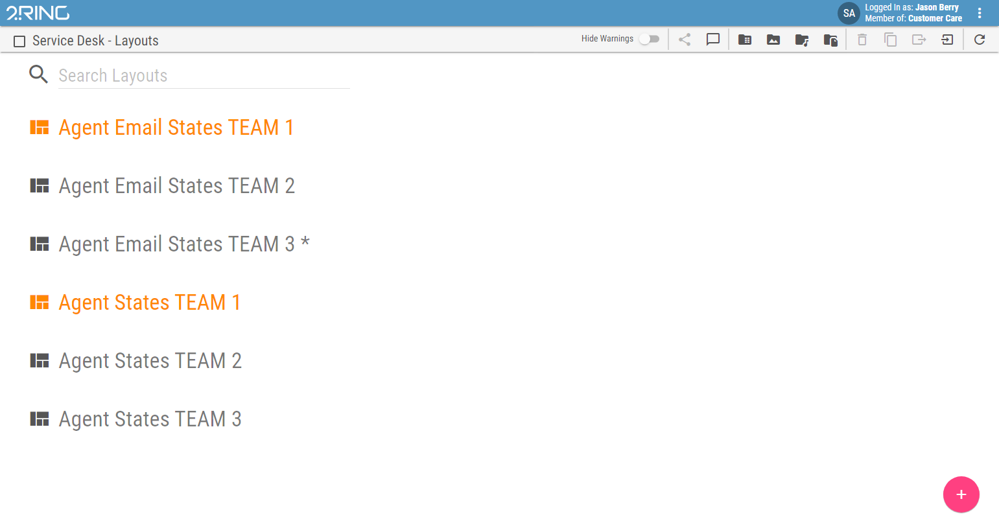

Working with the Layout List¶
The Layout list displays all available Layouts. Each Layout is represented by name and, if available, a description.
Figure 1: Layout list Controls:
- Search box
Displayed Layouts can be filtered using the search box. When no search phrase is entered, all available Layouts are displayed. Otherwise only Layouts containing the entered phrase are displayed. The letter case is neglected. Pressing any key on the keyboard automatically starts typing into the search box.
- Hide Warnings
Whether Layouts with warnings should be highlighted in a different color.
- Share
Available only when a single Layout is selected. Opens up a dialog with sharable links to the selected Layout.
- Update banners
Available for Business Unit administrators, system administrators and Message Authors only. Opens up a dialog where multiple banners text can be updated. For more info see Update Banners chapter.
- Manage CSV Files
By clicking on the Manage CSV Files button, CSV files can be uploaded or deleted and then selected as a source table in table valued calculations to provide static data. For more info see Upload CSV Files chapter.
- Manage Image Files
By clicking on the Manage Image Files button, image files can be uploaded or deleted. For more info see Content Management chapter.
- Manage Audio Files
By clicking on the Manage Audio Files button, audio files can be uploaded or deleted. For more info see Content Management chapter.
- Manage PDF Files
By clicking on the Manage PDF Files button, PDF files can be uploaded or deleted. For more info see Content Management chapter.
- Delete
Available when at least one Layout is selected. Permanently deletes all selected Layouts.
- Copy
Available when at least one Layout is selected. Opens up a dialog where selected Layouts can be copied. For more info see Copying Layouts chapter.
- Export
By clicking on the Export button, selected layout/widget is exported and downloaded as a json file. For more info see Exporting/Importing Layouts chapter.
- Import
Exported layout/widget can be imported by clicking on the Import button. For more info see Exporting/Importing Layouts chapter.
- Refresh
Refreshes the content of the Layout list.
- Select/Deselect All
Add all Layouts to selection or removes all Layouts from selection if all are already selected.
When hovering over the layout’s name, a preview of the layout is displayed.
Figure 2: Layout preview
If there is a draft version of the layout, the layout is marked with *. For more information about draft, see Draft chapter.
Figure 3: Layout list
If there are some Layouts, containing not propperly configured segments, administrators can see them marked orange in the Layout list.
Figure 4: Layout list containing invalid Layouts
If user has privileges then a new Layout can be added by clicking the button, located on the bottom right side of the screen. Clicking the button will redirect the user to the newly created Layout and open up its edit mode.
When hovering over a Layout with mouse cursor, its icon changes to a checkbox. Toggling this checkbox adds or removes the hovered Layout from selection. Multiple Layouts can be selected at once. Additional controls are available when one or more Layouts are selected.